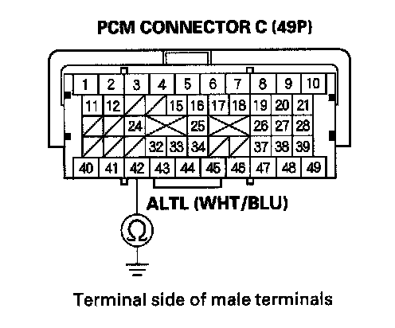
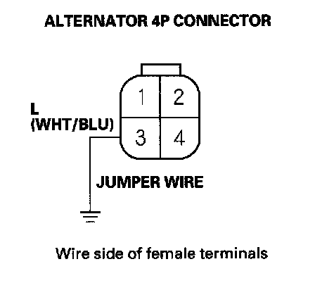
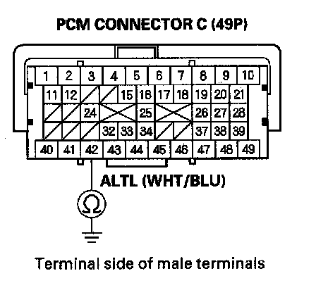

Charging System Indicator Circuit Troubleshooting
Charging System Indicator Circuit Troubleshooting1. Turn the ignition switch ON (II).
Does the charging system indicator come on?
YES - Go to step 2.
NO - Go to step 14.
2. Start the engine. Hold the engine speed at 2,000 rpm for 1 minute.
Does the charging system indicator go off?
YES - Charging system indicator circuit is OK. Go to the alternator and regulator circuit troubleshooting.
NO - Go to step 3.
3. Do the gauge control module self-diagnostic function procedure.
Does the charging system indicator flash?
YES - Go to step 4.
NO - Replace the gauge control module.
4. Turn the ignition switch OFF.
5. Disconnect the alternator 4P connector.
6. Turn the ignition switch ON (II).
Does the charging system indicator go off?
YES - Replace the alternator , or repair the alternator.
NO - Go to step 7.
7. Turn the ignition switch OFF.
8. Connect the Honda Diagnostic System (HDS) to the data link connector (DLC).
9. Turn the ignition switch ON (II).
10. Make sure the HDS communicates with the vehicle and the powertrain control module (PCM). If it doesn't communicate, troubleshoot the DLC circuit.
11. Jump the SCS line with the HDS, then turn the ignition switch OFF.
NOTE: This step must be done to protect the PCM from damage.
12. Disconnect PCM connector C (49P).

13. Check for continuity between PCM connector terminal C42 and body ground.
Is there continuity?
YES - Repair short in the wire between the alternator and the PCM.
NO - Update the PCM if it does not have the latest software, or substitute a known-good PCM, then recheck. If the symptom/indication goes away with a known-good PCM, replace the original PCM.
14. Do the gauge control module self-diagnostic function procedure.
Does the charging system indicator flash?
YES - Go to step 15.
NO - Replace the gauge control module.
15. Turn the ignition switch OFF.
16. Disconnect the alternator 4P connector.

17. Connect alternator 4P connector terminal No. 3 and body ground with a jumper wire.
18. Turn the ignition switch ON (II).
Does the charging system indicator come on?
YES - Replace the alternator , or repair the alternator.
NO - Go to step 19.
19. Connect the HDS to the DLC
20. Turn the ignition switch ON (II).
21. Make sure the HDS communicates with the vehicle and the PCM. If it doesn't communicate, troubleshoot the DLC circuit.
22. Jump the SCS line with the HDS, then turn the ignition switch OFF.
NOTE: This step must be done to protect the PCM from damage.
23. Disconnect PCM connector C (49P).

24. Check for continuity between PCM connector terminal C42 and body ground.
Is there continuity?
YES - Update the PCM if it does not have the latest software, or substitute a known-good PCM, then recheck. If the symptom/indication goes away with a known-good PCM, replace the original PCM.
NO - Repair open in the wire between the alternator and the PCM.